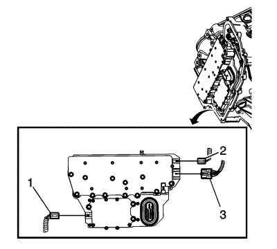
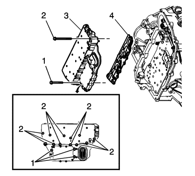
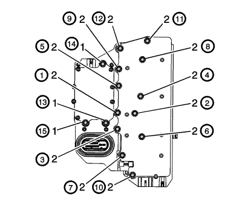

Sustitución del conjunto de módulos de control del cambio y válvulas solenoides de control
Procedimiento de desmontaje
- Retire la cubierta del cuerpo de la válvula de control del cambio. Consultar
Sustitución de la tapa del cuerpo de válvulas de control : LNP .

- Desconecte el conector eléctrico del sensor de velocidad de salida (2).
- Desconecte el conector eléctrico del interruptor de posición del cambio (3).
- Desconecte el conector eléctrico del sensor de velocidad de entrada (1).

- Retire los 3 pernos (1) M5 x 40,5.del cuerpo de la válvula de control.
- Retire los 12 pernos (2) M6 x 97.del cuerpo de la válvula de control.
- Retire el conjunto de válvula solenoide de control (3) con el módulo de control de la transmisión.
Atención: Tenga cuidado al desmontar o montar el conjunto de la placa de filtro. Una pestaña de retención suelta o ausente puede significar una sujeción incorrecta de la placa de filtro en el conjunto de la válvula solenoide de control, ocasionando posibles daños o contaminación.
- Retire la placa de filtro del conjunto de válvula solenoide de control (4). Descarte la placa de filtro. No se puede reutilizar.
- Revise las juntas del interruptor de presión por si presentan puntos defectuosos o contaminación. Sustituya el conjunto de válvula solenoide de control de ser necesario.
- Revise los agujeros pasantes del perno de la placa de canales por si presentan puntos defectuosos o irregularidades en la superficie. Cualquier punto defectuoso podría causar fugas. Sustitúyalos si es necesario.
Procedimiento de montaje
Atención: Tenga cuidado al desmontar o montar el conjunto de la placa de filtro. Una pestaña de retención suelta o ausente puede significar una sujeción incorrecta de la placa de filtro en el conjunto de la válvula solenoide de control, ocasionando posibles daños o contaminación.
- Monte una NUEVA placa de filtro (4) de conjunto de válvula solenoide de control para evitar fugas de líquido por las juntas de líquidos.
- Monte el conjunto de válvula solenoide de control (3) con el módulo de control de la transmisión.
- Rosque a mano los pernos (1, 2) de la tapa del cuerpo de la válvula de control.
Precaución: Consulte Precaución con las fijaciones en la sección Prólogo

- Asegure los 12 pernos (2) M6 x 97 del cuerpo de la válvula de control y apriételos secuencialmente con 12 N·m(106 lb pulg.).
- Asegure los 3 pernos (1) M5 x 40,5 del cuerpo de la válvula de control y apriételos secuencialmente con 8 N·m(71 lb pulg.).
- Conecte el conector eléctrico del sensor de velocidad de entrada (1).
- Conecte el conector eléctrico del sensor de velocidad de salida (2).
- Monte la cubierta del cuerpo de la válvula de control del cambio. Consultar
Sustitución de la tapa del cuerpo de válvulas de control : LNP .
- Tras las reparaciones, consulte Referencias del módulo de control para ver los procedimientos de programación y configuración.
- Realice la programación de los valores adaptativos de la caja de cambio. Consultar Programar valores adaptativos de la transmisión .
| © Copyright Chevrolet. Reservados todos los derechos |